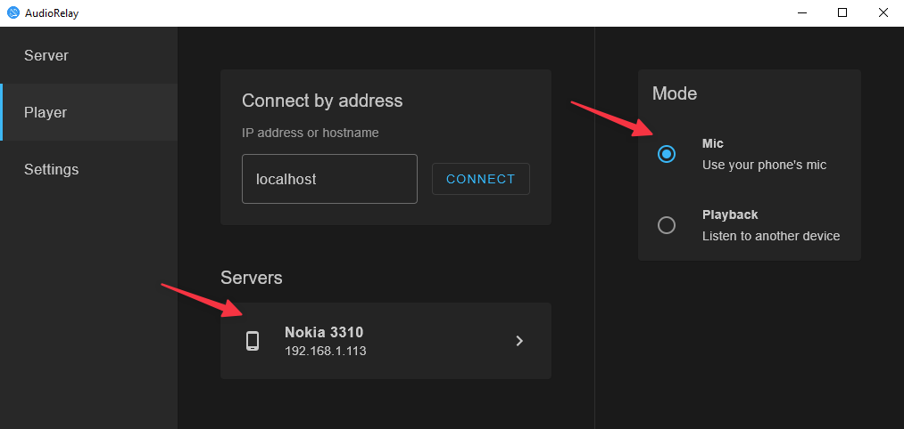

AudioRelay 这三年：从一根 USB 线到系统音频抓取
一款跨平台音频中继工具的迭代轨迹——它从"把 PC 声音转到手机"起步，慢慢长出了 Apps source、Virtual Mic、Opus 48kHz 这些后来被用户当成招牌的功能。
现在打开 AudioRelay 的 Android 端，第一眼看到的就是那个服务器 Tab 上并排的三个按钮：Mic、Apps、USB。你点 Apps，系统弹出 MediaProjection 权限确认，点一下"立即开始"，手机上 YouTube 放的歌、游戏里的音效、甚至通知声，全部被抓进一个音频混音通道，经 Wi-Fi 或 USB 送到 PC 端的播放器。整个过程不需要 root，不需要改系统配置，Android 10 以上原生支持。
这个"Apps 来源"功能，是我观察 AudioRelay 迭代路线时最在意的一个标记。它不是团队一开始就想做的东西——样本文档里没有写任何版本号，但从 Android MediaProjection API 的发布时间（Android 10，2019 年）倒推，这个功能大概率是 AudioRelay 发展到中期才加上的。在那之前，它能做的事情很朴素：把 PC 的声音转发到手机扬声器，或者把手机麦克风的声音送回 PC。
起步阶段：一根 USB 线能解决什么
AudioRelay 最早的形态应该很简单——它的官网产品介绍页上，对自己定位的描述一直很克制。想象一下，作者遇到的原始需求大概是：我想躺在沙发上用手机看视频，但视频源在 PC 上；或者反过来，我想用 PC 上的 Zoom 开会，但觉得笔记本自带麦克风太差，想用手机那个更贵的录音设备。
最初的方案可能就是 USB Tethering——Android 用 USB 连 PC，共享一条有线网络通路，然后 AudioRelay 在 PC 和手机之间跑一个 TCP 连接，把音频数据包在这条链路上来回搬。USB 的好处是零延迟、不消耗 Wi-Fi 带宽、不怕 VPN 和访客网络隔离。早期版本的文档里一定有大量关于 USB 调试、开发者选项、ADB 的说明——虽然我现在看不到那些早期文档，但从现在的文档里专门留了一章讲 USB Tethering 设置来看，USB 连接方式是它的血脉。
转折点：Apps source 为什么是里程碑
当 Android 10 发布、MediaProjection API 公开之后，AudioRelay 的团队应该意识到了一个机会——之前只能抓物理麦克风（Mic source），现在可以抓系统音频混音（Apps source）。这个变化带来的想象空间完全不同了。
Mic source 的场景是"我想让 PC 听到我说话"，用途局限在语音通话、远程会议、语音输入这些场景。而 Apps source 的场景是"我想让 PC 听到手机上任何正在播放的声音"——手机里播的 YouTube 视频、手游的背景音乐、网易云的歌，全部可以实时转到 PC 扬声器或者录进 PC 的录音软件里。这一下子把产品的定位从"麦克风转发小工具"拉到了"跨平台音频桥接器"。
但 Apps source 不是白来的。它需要处理几个之前 Mic source 不需要面对的问题：DRM 内容主动 opt-out（Netflix、Disney+ 抓不到）、独占音频焦点冲突（AudioRelay 抢了焦点其他 App 就静音了）、MediaProjection 会话被厂商定制 ROM 在锁屏后强制终止。文档里专门有一节讲"独占音频"开关——这就是团队在真实用户反馈中发现问题后加的妥协项：默认关闭，让所有 App 声音都能被捕获；开了独占，抓原始 WASAPI 输出音质更好但只有一个 App 能出声。这种"能做选择就别替用户做选择"的产品思路，在 AudioRelay 后来的迭代里反复出现。
Virtual Mic：让手机麦变成 PC 的"可选设备"
另一个关键功能是 PC 端的 Virtual Mic 驱动。
在 Virtual Mic 出现之前，AudioRelay 把手机麦克风的声音送到 PC，只能走 Speaker 输出模式——PC 扬声器出声，任何应用都不能把它当成输入设备。这意味着你想用手机麦开 Zoom？不行。想在 Discord 里用手机麦说话？不行。AudioRelay 只能当一个"扬声器中继器"，不能当"虚拟声卡"。
Virtual Mic 解决了这个问题：从下载拿到 PC 端安装包后，记得以管理员权限运行——AudioRelay 需要注册虚拟声卡驱动，没有管理员权限会静默失败。正常启动后它会自动在 Windows 声音设置里注册一个名为 Virtual Mic (Virtual Mic for AudioRelay) 的录音设备。之后任何语音应用（Zoom、Discord、微信、浏览器麦克风权限请求）都能在输入设备列表里看到它，选它就等于选了手机麦克风。
这个功能的意义在于，它让 AudioRelay 从"音频播放工具"变成了"音频输入输出工具"——既能出也能进。文档里专门列了 Speaker 和 Mic 两种输出模式的对比表，把"要不要设为默认设备"单独作为一节来写，甚至提到了 Windows 7 用户需要额外安装 VB-CABLE——这些细节说明 Virtual Mic 这个功能花了团队不少精力打磨，尤其是兼容不同 Windows 版本的虚拟声卡驱动这块，技术门槛比 Apps source 还高。

底层较劲：Opus 48kHz 和 EventSync
如果说 Apps source 和 Virtual Mic 是用户能直接感知到的"显性功能"，那 Opus 48kHz 采样率优化和 EventSync 就是团队在底层死磕的"隐性细节"。
Opus 编码原生工作在 48kHz。如果 Windows 默认播放设备格式低于这个值（比如 44.1kHz CD 音质），AudioRelay 在编码前要额外做一次上采样——把低采样率信号插值到 48kHz。文档里专门用了一整章讲这个：上采样会带来轻微音质损失、额外 CPU 开销、不必要的延迟。团队甚至告诉用户"改了不会更差，不改也不会坏——属于能改就改级别的优化"——这种坦诚的口吻，说明他们对自己的编码链路有信心，不需要用玄学来吓唬用户。
EventSync 是另一个有趣的开关。它的作用是让 PC 和手机的音频采样时钟同步，避免长时间运行后声音慢慢漂移不同步。文档里提到如果 Virtual Mic 电平条一直是 0，可以试试关掉 EventSync——说明这个功能在某些硬件组合下反而会出问题，但团队没有因为兼容性问题就砍掉它，而是做成可选项让用户自己决定。
连接方式的三条腿：自动发现、手动 IP、USB
AudioRelay 的连接方式也能看出迭代逻辑。默认是 mDNS 自动发现——手机打开 AudioRelay 就能自动找到同一 Wi-Fi 下的 PC 服务器。但自动发现依赖 UDP 5353 端口不被防火墙或 VPN 拦截，依赖手机和 PC 在同一个局域网里。所以团队又加了手动 IP 连接——敲一个 IP 地址就能连上，绕过 mDNS。
然后是 USB Tethering。当 Wi-Fi 不稳定、VPN 全隧道劫持了本地流量、访客网络 AP 隔离完全阻断设备间通信时，USB Tethering 是最后的兜底方案——有线、零延迟、不依赖任何路由器配置。
这三条连接方式不是一次设计好的，而是跟着用户踩坑的节奏一步步补上的。AudioRelay文档里专门有一章讲 VPN 和访客网络的坑——全隧道模式为什么会断连、怎么找 Allow LAN traffic 开关、为什么访客网络 AP 隔离无解、移动热点为什么意外可行。这些内容不是产品设计时就能预料到的，是团队收到了无数"为什么连不上"的反馈后整理出来的实用指南。
从迭代规律看团队的优先级
看完这四个功能模块，我对 AudioRelay 团队的迭代节奏有一个判断：他们一直在死磕"让音频在 PC 和 Android 之间无损、低延迟、无配置地流动"这件事，而不是搞花里胡哨的功能。
三个连接方式（自动发现 / 手动 IP / USB）解决的是"能不能连上"的问题；Apps source 和 Virtual Mic 解决的是"能传什么、能在哪用"的问题；48kHz 和 EventSync 解决的是"传得好不好"的问题。这三块的优先级很明确：先保证能用（连接），再扩展场景（功能覆盖），最后抠质量（音质和延迟）。
而他们一直没做的事情也很明显：没有 iOS 端、没有跨平台到 macOS/Linux 的 Windows 对等支持、没有文件传输功能、没有云同步。AudioRelay 至今还是一个"PC ↔ Android"的点对点音频工具，没有试图变成一个大而全的生态。这种聚焦在竞品泛滥的工具类产品里很少见——很多同类软件在有了基本功能之后就忍不住加这加那，最后变成四不像。
往后看，下一步大概率是什么
从迭代规律推，我觉得 AudioRelay 接下来的方向有两个可能。
一个是继续深挖 Android 侧的音频捕获能力——Android 13 引入了新的音频路由 API，也许团队会跟进支持更灵活的系统音频流隔离，让 Apps source 能选择性地只抓某几个 App 的声音而不是全系统混音。
另一个是增强 USB Tethering 的自动化程度——现在用户还需要手动开启 USB 调试、确认授权弹窗，如果能做到"插上 USB 线自动识别并建立连接"，会大幅降低使用门槛。
至于 iOS 端，我暂时不抱期待。iOS 的音频捕获 API 比 Android 限制严得多，团队如果真要做，早就做了——没做说明要么技术上没突破，要么觉得 ROI 不值得。
这套工具的安装包和源码在三个仓库都有备份——GitHub是主仓库，Gitee和GitCode做国内镜像方便访问，从 Android 端的界面到 PC 端的 Virtual Mic 驱动，每一份文档和配置都整理得很清楚——跨平台工具的文档质量比它的功能本身还值得多看两眼。